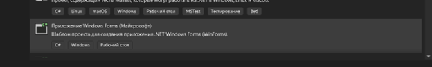
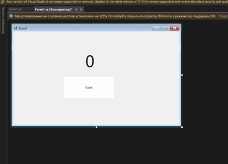
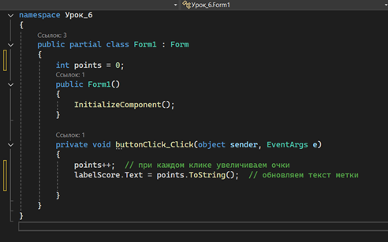
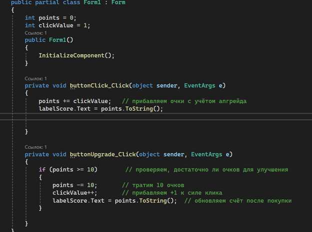
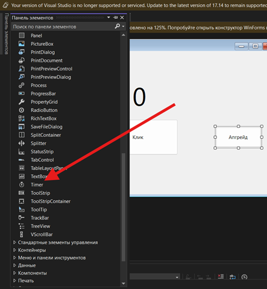
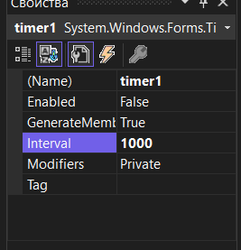
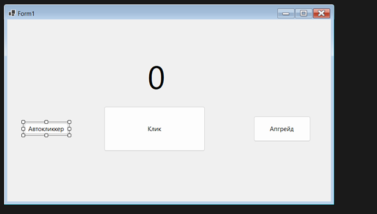

Повторение предыдущих тем (вопросы)
Теоретическая часть
Напомнить детям:
В Windows Forms взаимодействие с пользователем организуется через механизм событий. Событие — это сигнал о каком-то действии (например, нажатие кнопки). При щелчке по кнопке генерируется событие Click. Чтобы выполнить код при этом событии, пишут метод-обработчик – например, двойной клик по кнопке в дизайнере форм Visual Studio автоматически создаст пустой метод button_Click. В этот метод можно поместить команды, которые изменяют переменные состояния игры (например, увеличивают счёт).
Переменные состояния – это обычные переменные, хранящие текущее состояние игры (количество очков, уровень улучшения и т.д.). Когда пользователь нажимает кнопку, в обработчике события мы увеличиваем эти переменные и обновляем интерфейс (метки, текст кнопок и т.п.). Например, при нажатии кнопки «Клик» мы можем сделать points++ и вывести новое значение на метку с очками.
Компонент Timer позволяет выполнять код через регулярные интервалы времени. Если добавить на форму таймер и задать ему Interval = 1000, то каждый тик (каждую секунду) будет вызываться обработчик timer_Tick. В нём можно автоматически прибавлять очки, реализуя автокликер (см. практику).
Глава 1. Реализация кнопки «Клик» и счётчика очков

labelScore.Text = "0").
int points = 0; (состояние очков). Затем в обработчике события напишите код: прибавление точки и обновление метки:int points = 0; private void buttonClick_Click(object sender, EventArgs e) { points++; // при каждом клике увеличиваем очки labelScore.Text = points.ToString(); // обновляем текст метки }
ОБЪЯСНЕНИЕ: При каждом клике по кнопке buttonClick срабатывает событие Click и выполняется код внутри buttonClick_Click. В нём мы увеличиваем переменную points и выводим её значение в метку labelScore. Так интерфейс показывает текущий счёт.

Глава 2. Добавление апгрейда (+1 к клику)
int clickValue = 1; (на сколько увеличиваются очки за клик). При нажатии на кнопку «Апгрейд» будем увеличивать clickValue. Если хотите усложнить, можно вычитать очки за покупку (например, if (points >= 10) { points -= 10; clickValue++; }).int clickValue = 1; private void buttonUpgrade_Click(object sender, EventArgs e) { if (points >= 10) // проверяем, достаточно ли очков для улучшения { points -= 10; // тратим 10 очков clickValue++; // прибавляем +1 к силе клика labelScore.Text = points.ToString(); // обновляем счёт после покупки } }
private void buttonClick_Click(object sender, EventArgs e) { points += clickValue; // прибавляем очки с учётом апгрейда labelScore.Text = points.ToString(); }
ОБЪЯСНЕНИЕ: Теперь при каждом клике мы добавляем не 1, а значение переменной clickValue. А кнопку «Апгрейд» мы сделали так, что при нажатии она увеличивает clickValue на 1, тратя при этом 10 очков (логика с if). Таким образом, после покупки апгрейда каждый клик даёт больше очков. Переменные points и clickValue — это переменные состояния игры, которые изменяются по событиям интерфейса.

Глава 3. Добавление авто-кликера по таймеру


private void timer1_Tick(object sender, EventArgs e) { points += clickValue; // автоматическое добавление очков labelScore.Text = points.ToString(); }
private void buttonAuto_Click(object sender, EventArgs e) { timer1.Enabled = true; // запускаем автоматический клик }

ОБЪЯСНЕНИЕ: Компонент Timer позволяет вызывать свой Tick-обработчик через заданные интервалы. Когда таймер включён (Enabled = true), каждую секунду выполняется timer1_Tick, и мы автоматически прибавляем очки. Это реализует «автоклик»: очки растут без нажатия пользователем кнопок.
ПОЛНЫЙ КОД
namespace Урок_6 { public partial class Form1 : Form { int points = 0; int clickValue = 1; public Form1() { InitializeComponent(); } private void buttonClick_Click(object sender, EventArgs e) { points += clickValue; // прибавляем очки с учётом апгрейда labelScore.Text = points.ToString(); } private void buttonUpgrade_Click(object sender, EventArgs e) { if (points >= 10) // проверяем, достаточно ли очков для улучшения { points -= 10; // тратим 10 очков clickValue++; // прибавляем +1 к силе клика labelScore.Text = points.ToString(); // обновляем счёт после покупки } } private void timer1_Tick(object sender, EventArgs e) { points += clickValue; // автоматическое добавление очков labelScore.Text = points.ToString(); } private void buttonAuto_Click(object sender, EventArgs e) { timer1.Enabled = true; // запускаем автоматический клик } } }
Итог урока
Итог: мы познакомились с обработкой событий Click кнопок в Windows Forms, использованием переменных для хранения состояния игры (очки, сила клика), добавили автокликер через Timer и научились сохранять лучший результат в настройках приложения.